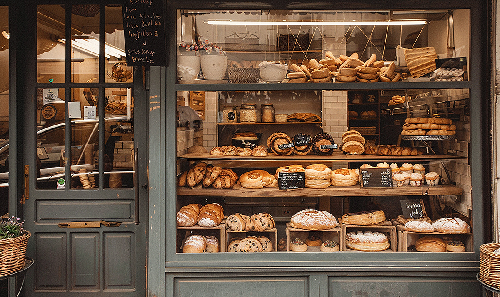

Made fresh every day
A little warmth in every bite.
Welcome to North Star Bakery, your neighborhood stop for freshly baked breads, pastries, and sweet treats. We believe the best moments begin around the table.
Explore our menu Place a request

From our oven
Simple ingredients. Memorable moments.
From crusty artisan loaves to buttery pastries, every item is made with care. Stop by for a morning treat or plan ahead for your next gathering.
Featured item of the week: Signature Loaf. A rustic, freshly baked loaf made for sharing.
See our baked goods →Find us this week
Find North Star Bakery in the heart of the neighborhood. Contact us for directions and pickup details.
Monday–Saturday: 7:00 AM–5:00 PM
Sunday: 8:00 AM–2:00 PM
A welcome from our bakery
Take a moment to hear a short welcome from North Star Bakery.
Come visit
Have a question or want to request something special? We would be happy to hear from you.
Contact the bakery